This page documents the work as i am building and reports it
(project_status_report.md, Oct 2026). The numbers are from the committed
outputs in outputs/. The next page (B2) reviews it, and
some of these headline claims don't survive that review.
Same equations as sd.brooks, except that Done − Todo is not clipped
when the backlog empties (see B2, issue 2). Defaults: 10 veterans,
Todo 500, comm 0.005, train 0.2, prod 5, mature 0.1, 10 hires at t=10,
horizon 20.
| scenario | change from default | median score (100k) | runs where hiring hurts | your verdict |
|---|---|---|---|---|
| baseline | 0 hires | 1049.0 | — | control |
| brooks_law | — | 351.8 | 100% | CONFIRMED |
| break_communication | comm 0 | 635.1 | 100% | CONFIRMED |
| break_training | train 0 | 1030.6 | 67.7% | AMBIGUOUS |
| fast_onboarding | mature 0.5 | 394.8 | 100% | CONFIRMED |
| early_hire | hire at t=2 | −267.4 | 100% | CONFIRMED |
| massive_surge | 50 hires | 351.8 | 100% | CONFIRMED |
| micro_hire | 1 hire | 930.4 | 100% | CONFIRMED |
| high_productivity | prod 15 | 2056.3 | 0% | BROKEN |
| long_horizon | 50 ticks | 423.0 | 100% | CONFIRMED |
| small_core_team | 2 veterans | −276.7 | 100% | CONFIRMED |
| steep_learning_curve | mature 0.02, train 0.4 | 351.8 | 100% | CONFIRMED |
| last_minute_panic | hire at t=18 | 971.4 | 100% | CONFIRMED |
| asynchronous_remote | comm 0.001 | 561.5 | 100% | CONFIRMED |
Verdict rule: CONFIRMED if more than 70% of paired runs score worse than baseline, BROKEN if more than 70% score better, else AMBIGUOUS.
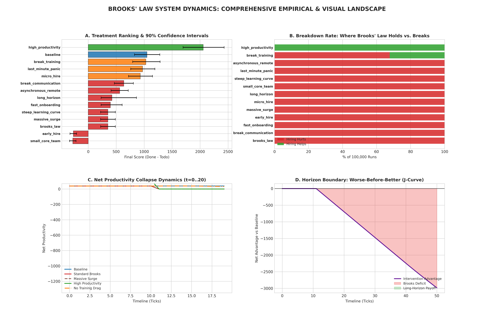
brooks_master_dashboard.png. (A) Scenario ranking with 90% intervals.
(B) Share of runs where hiring hurts. (C) Production after the hire. (D)
Cumulative advantage over 50 ticks; no recovery.forrester_brooks.py)| section | tests | reported |
|---|---|---|
| 1. Extreme conditions | zero workforce, novice-only, 106 hires, zero backlog, comm 1.0/0, train 0, mature 0/1 | 9 PASS |
| 2. Behaviour anomaly | causality, Done monotone, headcount conservation, non-negative stocks | 4 PASS |
| 3. Boundary adequacy / J-curve | horizons 10–80; search for crossover up to 120 ticks | PASS, "no crossover found" |
| 4. dt invariance | dt 1 → 0.05 | WARN, 28% error |
| 5. Metamorphic monotonicity | surge 0…100 | PASS |
| 6. Tipping points | sweep comm, train, mature | PASS, "none found" |
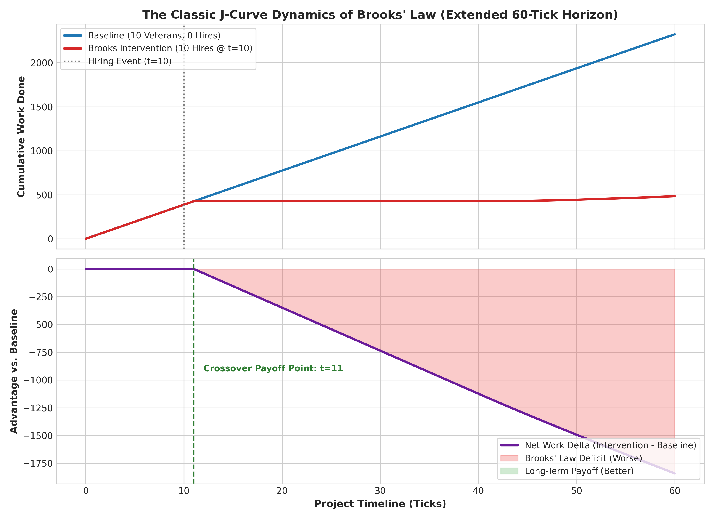
brooks_j_curve_horizon.png: the hire arm never recovers under the flat model.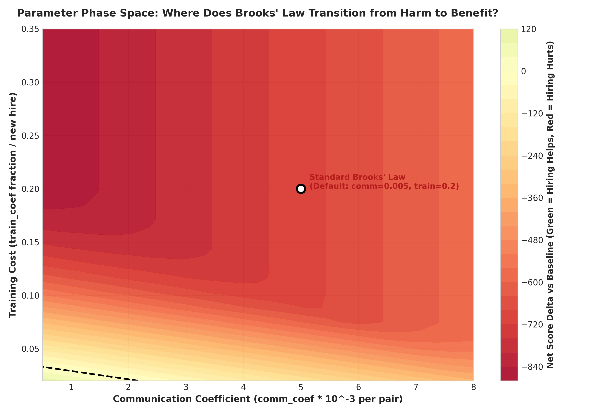
brooks_tipping_heatmap.png: where hiring stops hurting in parameter space.brooks_modifications.py)| architecture | equation change | reported median | reported verdict |
|---|---|---|---|
| Standard (flat) | reference | 351.8 | collapse |
| Ambassador partitioning | squads of 10; comm = (intra + inter channels)/V · c | 946.3 | mitigates, crossover t=11 |
| Dedicated mentor pod | ceil(New/5) vets mentor full time; the rest have no training drag | 1038.5 | parity with baseline |
| Async docs + CI | comm = V·log₂V · c/2; training × 0.6 | 671.7 | mitigates |
| Staged waves | 10 hires as 2/tick over 5 ticks | 392.4 | minor |
| Synergistic | squads + log comm + mentor pods | 1632.9 (10 hires), 2361.4 (50) | "Brooks broken" |
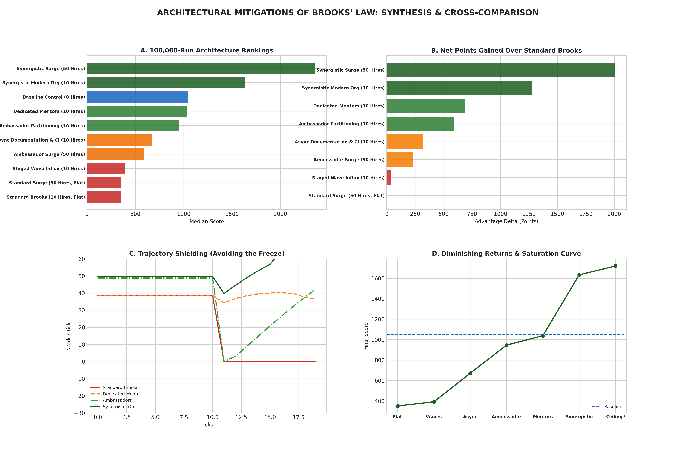
modified_master_dashboard.png: (A) rankings, (B) points gained over
flat Brooks, (C) production after the hire, (D) the "diminishing
returns" curve.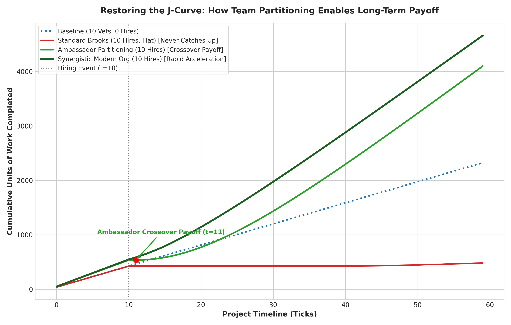
modified_j_curve_crossover.png: long-horizon crossover per architecture
(t=60, Todo 4000).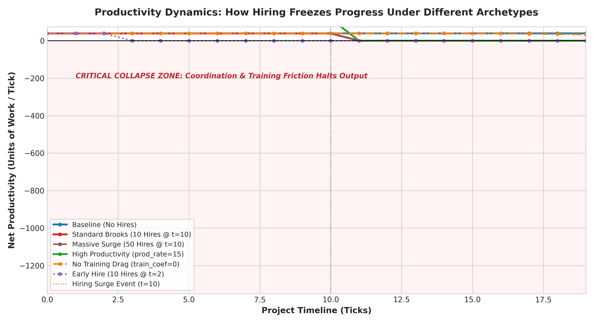
brooks_trajectories.png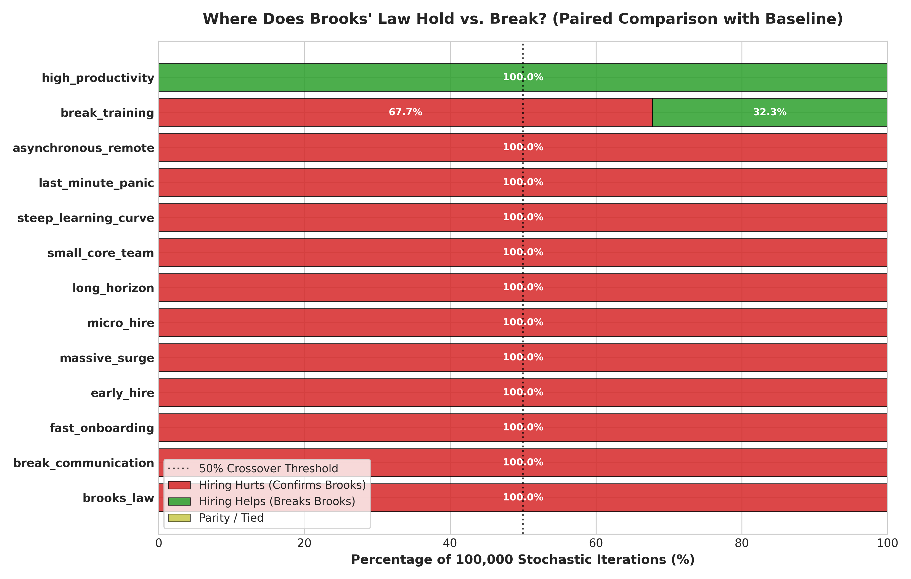
brooks_breakdown_bars.png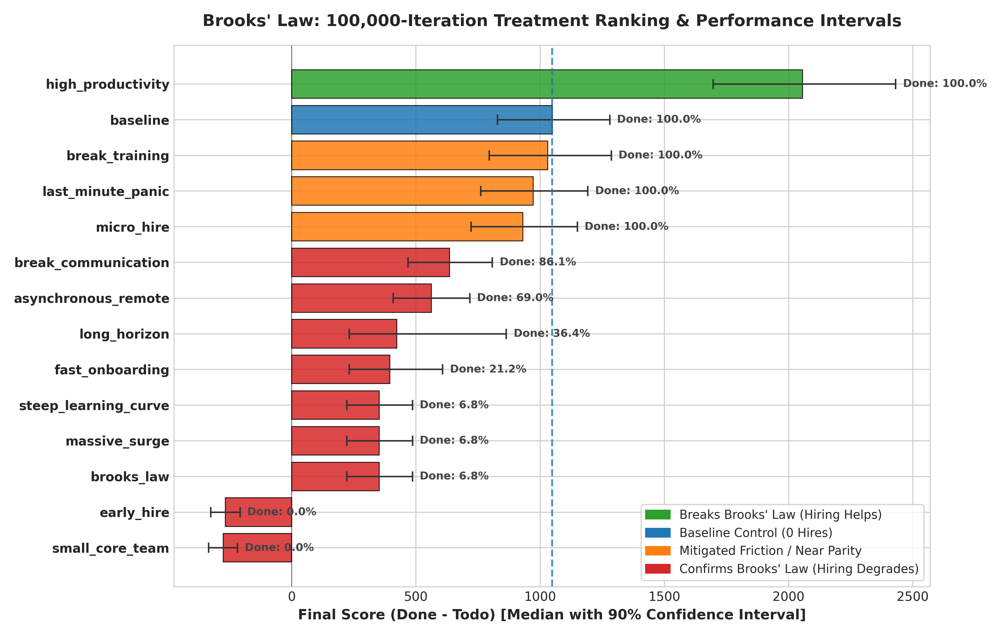
brooks_ranking_distributions.png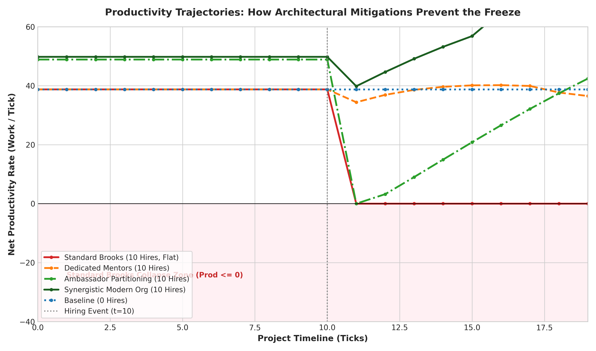
modified_trajectories.png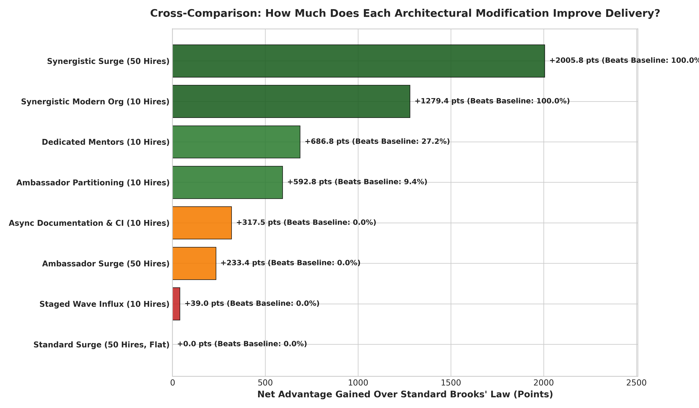
modified_breakdown_bars.png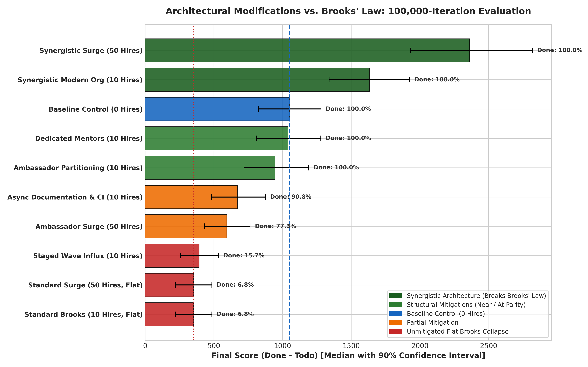
modified_ranking_distributions.png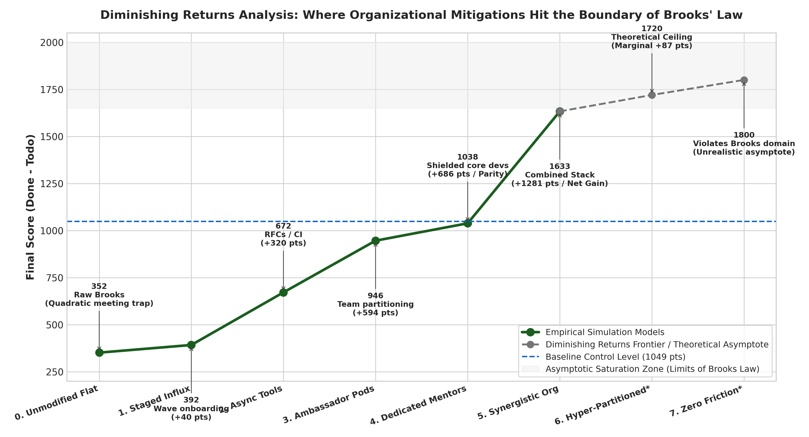
diminishing_returns_curve.pngClaims 1, 2 and 4 are re-examined in B2. Claim 5 is what Part C does.